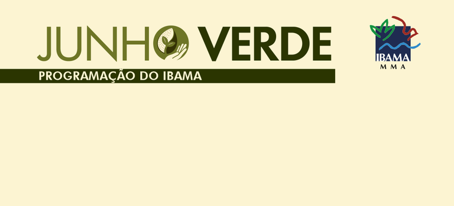

Ibama promove ações de educação ambiental em todo o Brasil
Campanha Junho Verde reúne palestras, oficinas e eventos em diversos estados para conscientizar sobre preservação ambiental.

Brasília, junho de 2026 — O Instituto Brasileiro do Meio Ambiente e dos Recursos Naturais Renováveis (Ibama) está realizando diversas atividades de educação ambientaldurante a campanha Junho Verde. As ações acontecem em vários estados do país e têm como objetivo conscientizar a população sobre a importância da preservação da natureza.
A iniciativa celebra o Dia Nacional da Educação Ambiental, em 3 de junho, e o Dia Mundial do Meio Ambiente, em 5 de junho, incentivando a participação da sociedade em práticas sustentáveis e na proteção da biodiversidade.
Em São Paulo, nos dias 2 e 3 de junho, foi realizado o encontro “Protocolos e Práticas para a Educação Socioambiental em Cenários de Eventos Extremos”, reunindo pesquisadores, gestores públicos e comunidades afetadas por crises climáticas. Já em Salvador, até o dia 3 de junho, ocorreu a campanha de entrega voluntária de animais silvestres mantidos irregularmente em cativeiro. Os animais recebidos foram encaminhados ao Centro de Triagem de Animais Silvestres (Cetas), onde passaram por avaliação veterinária e poderão ser soltos em áreas de preservação.
Em Brasília, entre os dias 8 e 11 de junho, acontece a Semana Nacional do Meio Ambiente, com atividades educativas voltadas para todas as idades. A programação conta com o apoio do Ibama, do Instituto Chico Mendes de Conservação da Biodiversidade (ICMBio), do Serviço Florestal Brasileiro e do Jardim Botânico do Rio de Janeiro.
Segundo o Ibama, o objetivo da campanha é ampliar a conscientização sobre a preservação ambiental, estimular práticas sustentáveis em escolas e comunidades e integrar a educação ambiental ao enfrentamento de desastres climáticos.